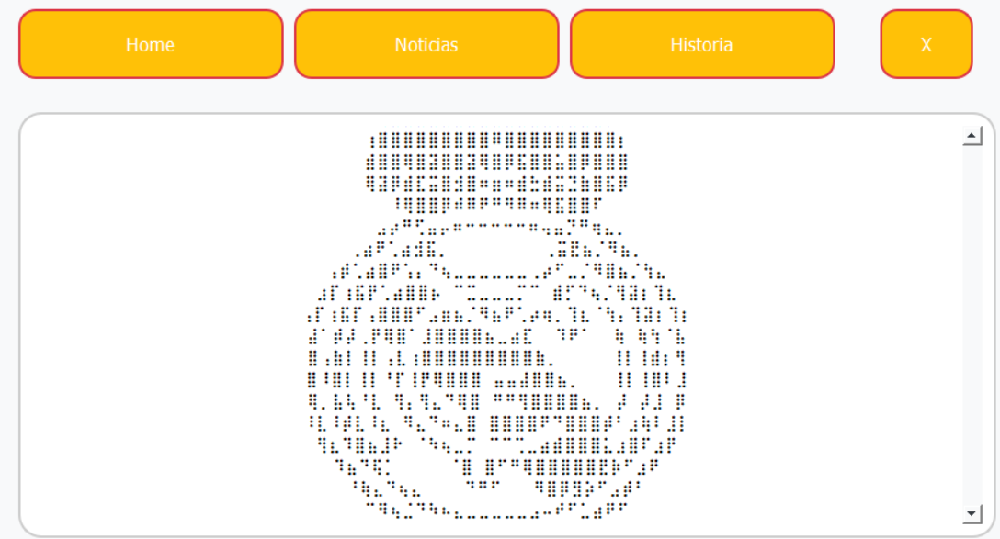
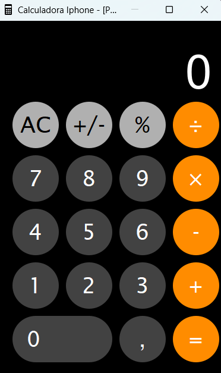

The Crows
The Crows é um site desenvolvido como projeto experimental para o Senac, durante o evento GeekMundi.
A proposta simula a missão "Encontre os Corvos" do jogo God of War (2018), desafiando os usuários a
localizar QR Codes espalhados pelo Senac Sorocaba ao longo do evento. Cada participante é ranqueado
com base no desempenho na busca.
Neste projeto, atuei diretamente no desenvolvimento do back-end e na integração com o banco de
dados, garantindo o registro e controle eficiente das interações dos usuários.
Ver Projeto

APP Real Madrid
plicativo desenvolvido em Python utilizando web scraping e a biblioteca PyQt5 para interface gráfica.
O sistema busca automaticamente as últimas notícias sobre o time Real Madrid em sites esportivos,
realiza o tratamento das informações coletadas e exibe tudo em um layout interativo.
O objetivo do projeto é demonstrar a integração entre raspagem de dados em tempo real e interfaces
desktop, promovendo uma experiência prática de consumo de notícias focada em um único time.
Ver Projeto

Calculadora iPhone
Este projeto é uma calculadora estilizada como a do iPhone, desenvolvida com Python 3.12 e PyQt5, com
layout responsivo e funcionalidades aritméticas básicas. Seu principal objetivo é simular a
interface visual do iOS em sistemas Windows/Linux, proporcionando uma experiência gráfica fluida e
intuitiva..
Ver Projeto